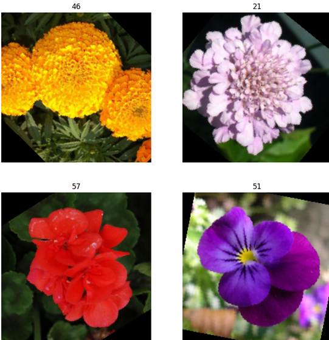
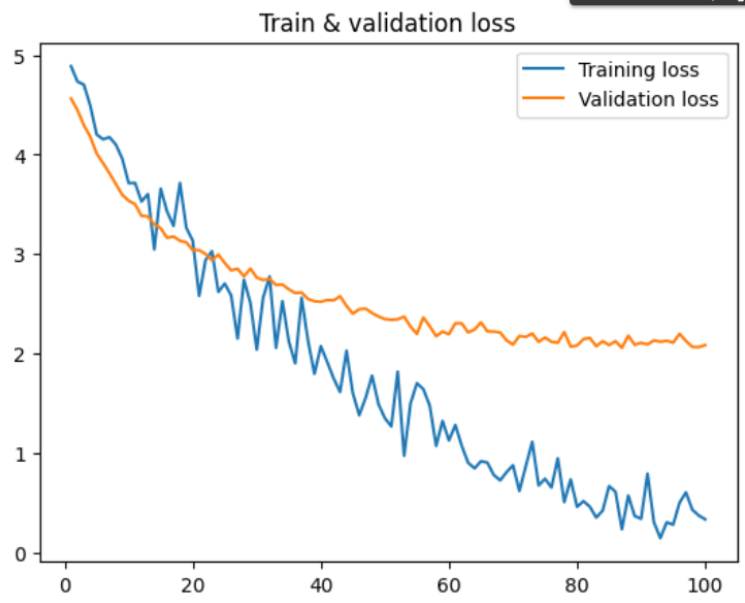
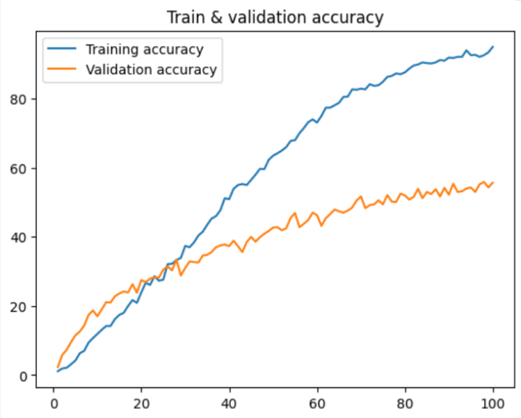
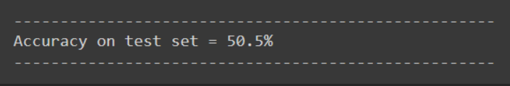

How to make a flower-identifying neural network that won't kill you once the robot uprising comes
And may our new machine lords have mercy on our souls
Intro
I, a university student, am being forced to make projects for a
university course that I chose to take in a subject I enjoy
learning about.
Most recently this manifested in a project to make and train a neural network capable of classifying the Oxford Flowers-102 dataset. As image datasets go, it's a famous one, containing 7169 images of 102 different types of flowers seen around the UK.
For any given flower image, you have a 0.98% chance of getting it right just by guessing, so all we had to do was make a network with a higher accuracy than that. Simple, right?
(and, before we go further, this very much was a team project, shout out to T, A, M, and T, we did pretty good for a bunch of people who'd never used Pytorch before)
Step 1
Do not do this.
I cannot emphasise enough that, for a training set of this size,
you should use a pretrained model. These models have been trained
on datasets containing millions of images and will do a
far better job of identifying flowers than the one you trained from scratch on about 1000. What’s more, your model is going to be prone to what we call overfitting, when a neural network is really good at dealing exactly with the data it got trained on, but a little bit shit at coping with anything else.
In these conditions, making a model with an accuracy greater than even 55% is going to be an unreasonably difficult task.
Step 2
Make your model.
Step 3
Profit.
No wait can we go back to step 2
In the best Blue Peter tradition, here's a neural network we made earlier. I'm going to talk through what we did and why we did it, and you can all follow along at home, with the code shown in boxes. This article also has some Fun Secret Sidebars - click on a title with no content below it, like the one below, to show the text.
Okay but like what is a neural network? ->
Ye olde imports
import math
import numpy as np
import matplotlib.pyplot as plt
import torch
import torch.nn as nn
from torch.optim import AdamW
import torchvision
import torchvision.transforms as transforms
from torchvision import datasets
from torch.utils.data import Dataset
from torch.utils.data import DataLoader
from torch.utils.data import random_split
from torch.utils.data import ConcatDataset
import scipy.io
Pytorch is a module used for machine learning, with lots of useful modules allowing you to load the dataset, transform it, and optimise your model. Numpy is used to draw graphs. Math sends us to the other side of the Atlantic where we awaken, blinking, in the USAmerican world of singular mathematic.
Load up the images
trainingTransform = transforms.Compose([
transforms.Resize(224),
transforms.RandomRotation(90),
transforms.CenterCrop(224),
transforms.RandomHorizontalFlip(),
transforms.RandomVerticalFlip(),
transforms.ToTensor(),
transforms.Normalize(0,1)
])
trainingTransformBrightness = transforms.Compose([
transforms.Resize(224),
transforms.RandomRotation(90),
transforms.CenterCrop(224),
transforms.ColorJitter(contrast=(0.5, 0.9), brightness=0.05),
transforms.ToTensor(),
transforms.Normalize(0,1)
])
trainingTransformSaturation = transforms.Compose([
transforms.Resize(224),
transforms.RandomRotation(90),
transforms.CenterCrop(224),
transforms.ColorJitter(saturation=(0.5, 0.9), hue=0.2),
transforms.ToTensor(),
transforms.Normalize(0,1)
])
nonTrainTransform = transforms.Compose([
transforms.Resize(224),
transforms.CenterCrop(224),
transforms.ToTensor(),
transforms.Normalize(0,1)
])
trainingSet = datasets.Flowers102(root="./flowers", split="train", download=True, transform=trainingTransform)
trainingSet2 = datasets.Flowers102(root="./flowers", split="train", download=True)
trainingSetBright, trainingSetSat = random_split(trainingSet2, (510, 510))
trainingSetSat.dataset.transform = trainingTransformSaturation
trainingSetBright.dataset.transform = trainingTransformBrightness
trainingSet = ConcatDataset([trainingSet, trainingSetBright, trainingSetBright])
validationSet = datasets.Flowers102(root="./flowers", split="val", download=True, transform=nonTrainTransform)
Here, we prepare to Do Things to innocent, unsuspecting images.
There are three sets. First, validationSet and testingSet will be used at the end to see how good our CNN is at identifying flowers (validation will be used throughout for peace of mind, whilst testing will be used to get a final accuracy). Each image in these two sets gets resized into a square, and normalised. toTensor() simply converts the image to a format that our neural network can work with.
The important part is the two trainingSets, which is made up of a few thousand flower images as well as a label saying what flower each is of. The two are, initially, identical, being resized into squares, normalised, and rotated randomly between 0 and 90 degrees. However, we next take trainingSet2, split it in half, and randomly adjust the brightness of the images in one half whilst doing the same to the saturation of those in the other half. Then, all of the trainingSets are combined into one big one.
We do this to add some variety to the training data. Remember when I mentioned that our handmade network won’t be trained on enough data to have a good accuracy? This process is to increase the data available, as well as making some of that data different enough that it almost makes up for the fact we don’t have millions of images at our disposal.
The below code displays 4 random training images, just to look at 'em.
figure = plt.figure(figsize=(10,10))
col, row = 2, 2
for i in range(1, 5):
randImg = torch.randint(len(trainingSet), size=(1,)).item()
img, label = trainingSet[randImg]
figure.add_subplot(row, col, i)
plt.title(label)
plt.axis(False)
plt.imshow(img.squeeze().permute(1,2,0))
plt.show()

(the labels for this dataset are all numbers. For reference, these flowers are, from top left clockwise, a wallflower, a fire lily, a petunia, and a gaura)
Quick GPU sidebar ->
And with all that out the way, we can start building our actual network!
I say our, I more accurately mean our implementation of the model also known as VGG11, because quite frankly if it’s not broken don’t fix it. Also our own attempts got a grand total of 7% accuracy. Nobody liked that.
Make a network that will do stuff
class CNN(nn.Module):
def __init__(self):super().__init__()def forward(self, x):
self.netLayers = nn.Sequential(
nn.Conv2d(in_channels=3, out_channels=64, kernel_size=3, padding=1),
nn.ReLU(),
nn.BatchNorm2d(64),
nn.MaxPool2d(2,2),
nn.BatchNorm2d(64),
nn.Conv2d(in_channels=64, out_channels=128, kernel_size=3, stride=(1,1), padding=1),
nn.ReLU(),
nn.BatchNorm2d(128),
nn.MaxPool2d(2,2),
nn.BatchNorm2d(128),
nn.Conv2d(in_channels=128, out_channels=256, kernel_size=3, stride=(1,1), padding=1),
nn.ReLU(),
nn.BatchNorm2d(256),
nn.Conv2d(in_channels=256, out_channels=256, kernel_size=3, stride=(1,1), padding=1),
nn.ReLU(),
nn.BatchNorm2d(256),
nn.MaxPool2d(2,2),
nn.BatchNorm2d(256),
nn.Conv2d(in_channels=256, out_channels=512, kernel_size=3, stride=(1,1), padding=1),
nn.ReLU(),
nn.BatchNorm2d(512),
nn.Conv2d(in_channels=512, out_channels=512, kernel_size=3, stride=(1,1), padding=1),
nn.ReLU(),
nn.BatchNorm2d(512),
nn.MaxPool2d(2,2),
nn.BatchNorm2d(512),
nn.Conv2d(in_channels=512, out_channels=512, kernel_size=3, stride=(1,1), padding=1),
nn.ReLU(),
nn.BatchNorm2d(512),
nn.Conv2d(in_channels=512, out_channels=512, kernel_size=3, stride=(1,1), padding=1),
nn.BatchNorm2d(512),
nn.MaxPool2d(2,2),
nn.BatchNorm2d(512),
nn.Flatten(),
nn.LazyLinear(4096),
nn.ReLU(),
nn.BatchNorm1d(4096),
nn.Dropout(0.8),
nn.LazyLinear(4096),
nn.ReLU(),
nn.BatchNorm1d(4096),
nn.Dropout(0.8),
nn.LazyLinear(1000),
nn.ReLU(),
nn.BatchNorm1d(1000),
nn.Dropout(0.5),
nn.Linear(1000, 102),
)result = self.netLayers(x)
return result
What we have here is a series of layers that work together to analyse
the features in an image and assign it to a flower.
The convolutional layers apply a mathematical function between the
input image and a filter across to produce a third function representing
a “feature map” - information about the image such as edges and corners.
The in_channels parameter from the first Conv layer is 3, representing
the three colour channels present in a RGB colour image. From there,
the number of channels can be modified as you desire, so long as the input channels of a given layer is the same number as the output channels from the previous layer.
ReLU is an activation function. It makes the neural network less linear (if it was fully linear, every single layer and neuron in each layer could just be replaced by one function, and would be really bad at dealing with images). ReLU converts the sum of the inputs to one single output. If this sum is greater than zero, the sum is outputted. Otherwise, 0 is.
Pooling layers summarise the features found, and decrease the size of the feature map to reduce the complexity of further calculations that'll get carried out on it. Maximum pooling, specifically, finds and keeps only the biggest number in a given subregion of the image, as demonstrated in the handy image below:
Batch normalisation layers do, essentially, what they say they do. They take an input batch of images and normalise them, to make the network train faster and be more stable.
After we work through a couple of those, we use a flatten layer to ensure the input is in the form of a one-dimensional array (this will be needed for later).
We finish with linear layers (which are also called fully connected layers). These compile all the information gathered from the previous layer, and then classify the input image. The difference between Linear and LazyLinear is that LazyLinear doesn’t need the input number of features specified and will just figure that out itself (it’s lazy like that!). The exact values for each parameter are, again, able to be changed, so long as the output is 102 - the same as the number of flower classes.
Between some of the linear layers are dropout layers. These randomly drop some of the neurons and prevent them from having any impact on the overall output, in order to stop overfitting.
All the forward function does is work through each of the layers in a sequential order.
Simple, right?
Get the network you just made to do the stuff
def epochCountTrain(trainLoader, cnn, optimizer, lossFunction):
totalLoss, correct = 0, 0
size = len(trainLoader.dataset)
for i, data in enumerate(trainLoader, 0):input, labels = dataepochTrainLoss.append(float(loss))
input = input.to(device)
labels = labels.to(device)
optimizer.zero_grad()
output = cnn(input)
loss = lossFunction(output, labels)
loss.backward()
optimizer.step()
totalLoss += loss.item()
correct += (output.argmax(1)==labels).sum().item()
if i % 20 == 0:loss, currentLoss = loss.item(), (i + 1) * len(input)
print(f"loss: {loss:>7f} [{currentLoss:>5d}/{size:>5d}]")
epochTrainAccuracy.append(round((correct/size)*100, 1))
print(f"\nAvg train loss: {(totalLoss/len(trainLoader)):>8f}")
print(f"Train accuracy = {((correct/size) * 100): >0.1f}%")
This function will run the model on the training dataset for a given
number of epochs, the exact value of which we'll define later. Each
epoch is one run through the entire set of images - more can improve
accuracy up to a point, but too many can lead to overfitting.
For each image in the training dataset, we feed it into the network.
Then, when we get the output, we use the loss from this output to go
back through the network and adjust its parameters to, hopefully,
make it better and more accurate.
The loss function works out how wrong the network's guess is. There are loads of different functions out there to calculate loss, but by far the most popular one (and the one we will use, which will come up later) is cross entropy loss.
def validation(valLoader, cnn, lossFunction):
valSize = len(valLoader.dataset)
correct = 0
loss = []
with torch.no_grad():for batch in valLoader:epochValLoss.append((np.average(loss)))input, labels = batch
input = input.to(device)
labels = labels.to(device)
prediction = cnn(input)
loss.append(lossFunction(prediction, labels).item())
correct += (labels == prediction.argmax(1)).sum().item()
epochValAccuracy.append(round((correct/valSize)*100, 1))
print(f"Accuracy on validation set = {((correct / valSize) * 100):>0.1f}%")
print(f"Average loss on validation set = {(np.average(loss))}\n")
After the network has been fully trained, we will then give the network new, unseen, images from the validation set. The code is very similar, except this time we don't want to change the parameters of the model, just feed it images and see what result it gives us.
def test(testLoader, cnn):
testSize = len(testLoader.dataset)
correct = 0
with torch.no_grad():for batch in testLoader:print("----------------------------------------------------")input, labels = batch
input = input.to(device)
labels = labels.to(device)
prediciton = cnn(input)
correct +=(prediciton.argmax(dim=1) == labels).sum().item()
print(f"Accuracy on test set = {((correct / testSize) * 100):>0.1f}%")
print("----------------------------------------------------")
Finally, giving the network the test data. According to the terms of our project, this is how it would be assessed. In reality, there isn't much point to both a testing and validation set, and most datasets just have a train/test split.
Now we can start defining things!
model = CNN().to(device)
epochTrainLoss = []
epochTrainAccuracy = []
epochValLoss = []
epochValAccuracy = []
epochCountList = []
These lists are just convenient ways of keeping track of the loss and accuracy of the model, as well as the number of epochs that have passed.
learningRate = 1e-4
batchSize = 32
lossFunction = nn.CrossEntropyLoss()
optimizer = AdamW(lr=learningRate, params=model.parameters(), weight_decay=0.1)
trainDataloader = DataLoader(trainingSet, batch_size=batchSize, shuffle=True)
valDataloader = DataLoader(validationSet, batch_size=batchSize, shuffle=True)
testDataloader = DataLoader(testingSet, batch_size=batchSize, shuffle=True)
We, at the moment, want our machine to train for 100 epochs, in batches of
32 images at a time.
The learning rate represents how much the model changes in response to
the calculated loss. This is another of those balancing acts - larger numbers can result
in too-big changes which make the machine unstable, but smaller ones can mean the
training process takes ages to actually get anywhere.
The loss function and optimiser are two bits of maths that I could spend an
entire article explaining. I am not going to do that, but other people have!
Read more about cross entropy loss here,
and the Adam optimiser here.
And finally we run it all
for i in range(epochCount):
print(f"Epoch {len(epochCountList)+1}")
model.train()
epochCountTrain(trainDataloader, model, optimizer, lossFunction)
model.eval()
validation(valDataloader, model, lossFunction)
epochCountList.append(len(epochCountList) + 1)
This is the code that will take the longest to run. It takes all the functions we defined earlier, and gets them running. Your output will, after a while, start to look something like this:

(And when I say “a while”, I do mean A While. Our network took a couple of hours to train, even using a Google Colab GPU.)
Shapes and colours
plt.plot(epochCountList, epochTrainLoss, label="Training loss")
plt.plot(epochCountList, epochValLoss, label="Validation loss")
plt.title("Train & validation loss")
plt.legend()
plt.show()
plt.plot(epochCountList, epochTrainAccuracy, label="Training accuracy")
plt.plot(epochCountList, epochValAccuracy, label="Validation accuracy")
plt.title("Train & validation accuracy")
plt.legend()
plt.show()
Remember the losses and accuracies from earlier? Now we put them on some graphs!
 Save the model for later ->
But all this begs the question - how accurate is our model? Will the robo-gardeners identify us as Japanese knotweed and flamethrower us? Did we pass the project?
test(testDataloader, model)

...eh it's probably fine.